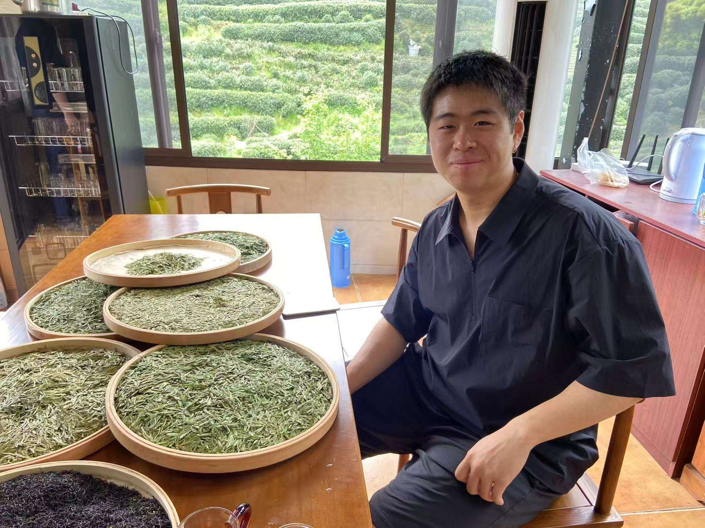

I am an incoming graduate student at the University of Houston. My research interests are in dynamical systems.
I started my undergraduate studies at NYU as a finance major but soon found my passion for mathematics. There, I was involved with summer research and peer tutoring programs. These opportunities were formative in my desire to continue my studies, and I hope to contribute as an educator and researcher as I continue my journey.
